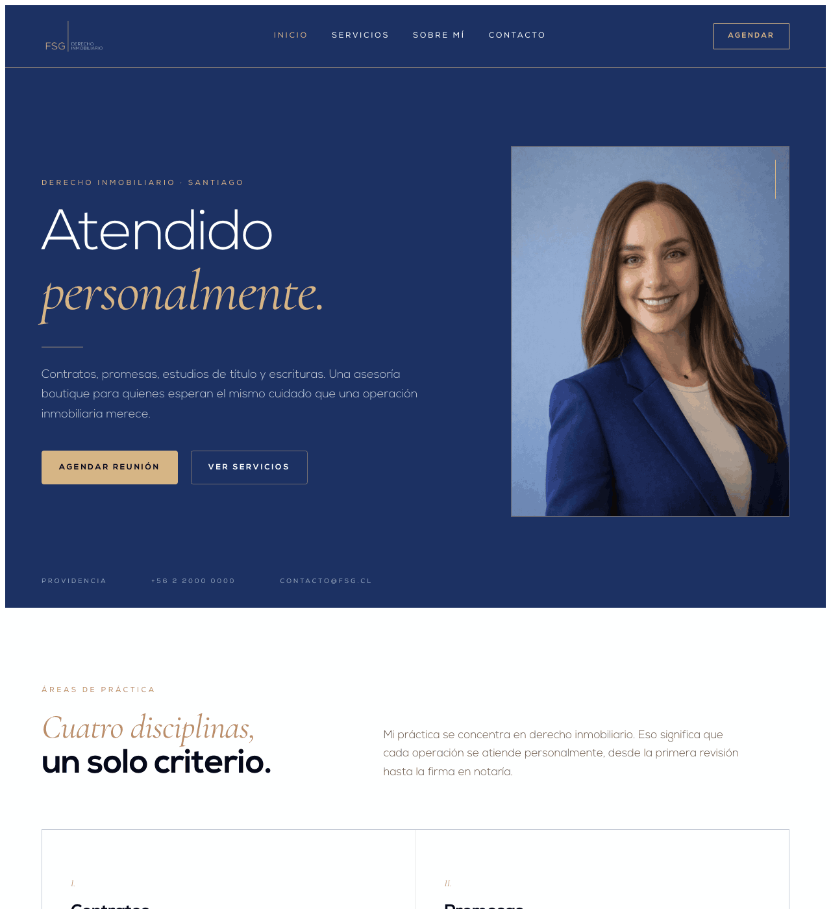
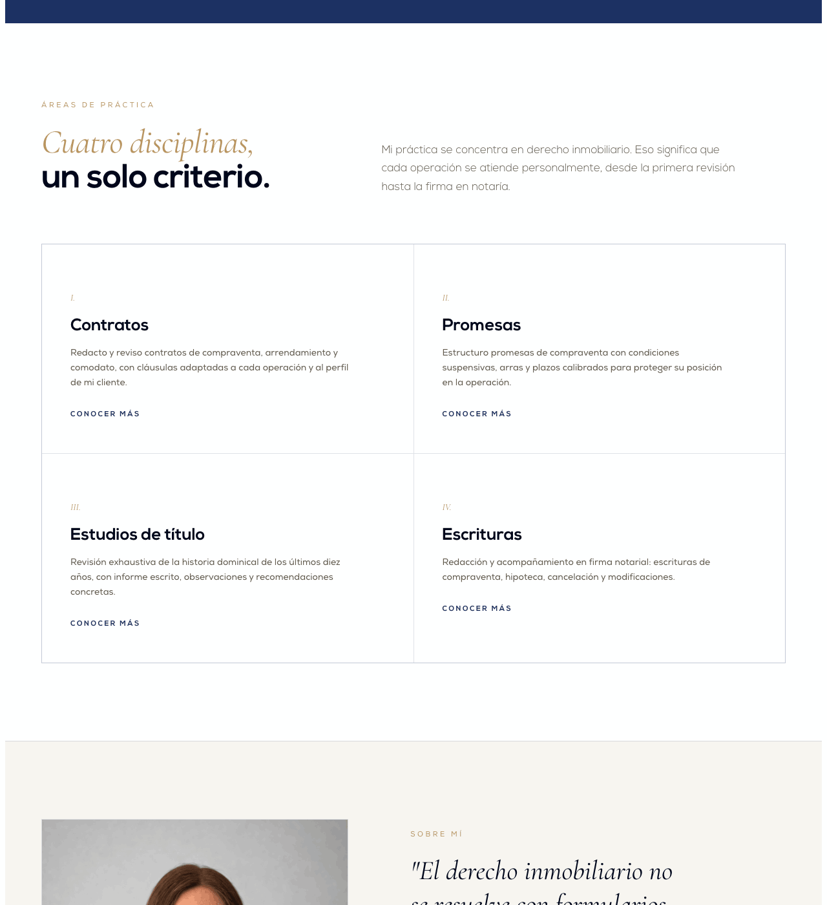
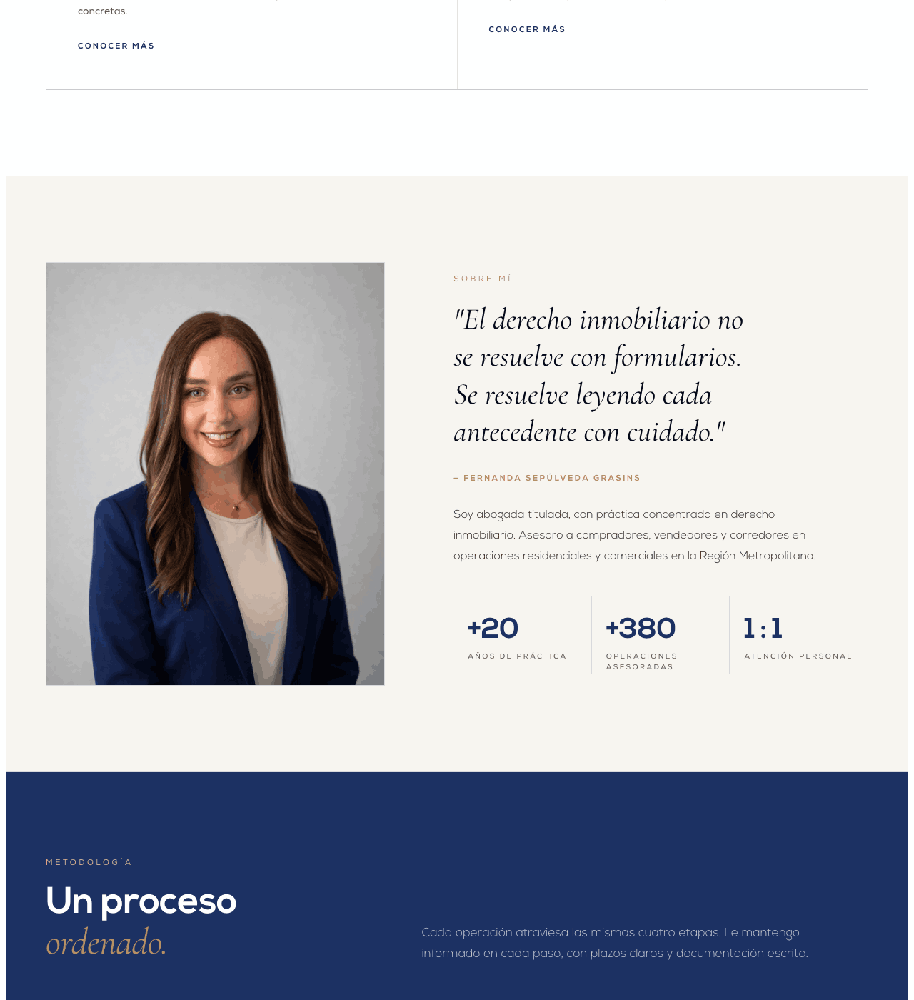
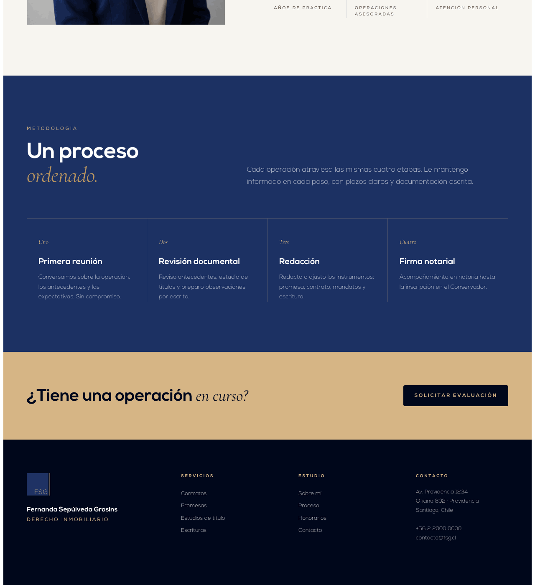
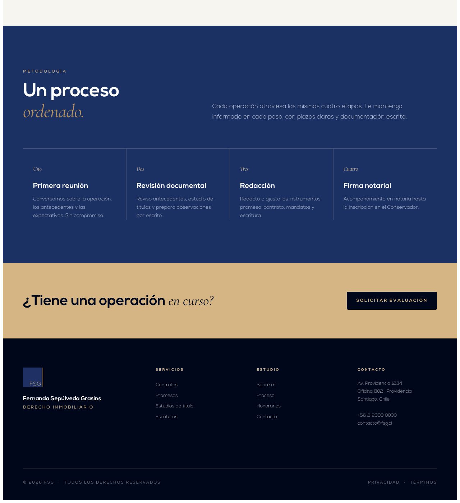

El diseño está terminado. Tu trabajo es portarlo al stack correcto (Next.js + TypeScript) sin rediseñar nada. Los JSX del kit son la verdad: copialos tal cual, tipalos, ruteá las páginas, deployá a Vercel. No inventes componentes, no cambies colores, no reemplaces tipografías, no "mejores" layouts.
Screenshots del sitio actual corriendo. El resultado final en Next debe verse idéntico — mismo spacing, mismos colores, mismo retrato, mismas tipografías en los mismos tamaños. Si algo no matchea, es un bug.





SÍ: migrar .jsx a .tsx, agregar tipos, setup de rutas, agregar 'use client' donde haga falta, conectar el form a Resend, optimizar imágenes con next/image.
NO: cambiar colores, cambiar tipografías, rehacer el hero "porque queda mejor", mover el retrato, agregar gradientes, sustituir Nexa por Inter, cambiar el copy, agregar emoji, introducir sombras dulces, rediseñar botones. El diseño está firmado — vos sos el ingeniero que lo hace funcionar en producción.
FSG es la práctica personal de Fernanda. No es un estudio corporativo: es una asesoría boutique de derecho inmobiliario con estándar notarial. Pocos clientes, atención meticulosa, trato personal.
Cuatro colores. Ni uno más. Proporción rectora 70% neutro claro, 20% navy, 8% ink, 2% dorado. El dorado es joya, nunca muro.
Los tokens completos (escalas de navy/gold, neutros, semantic state, tipografía, spacing, radii y shadows) viven en colors_and_type.css. Cópialo a tu proyecto tal cual — son variables CSS puras, sin preprocesador.
Nexa geométrica para la voz principal. Cormorant Garamond itálica para el acento editorial. Sin excepciones.
Nexa está en fonts/Nexa-*.otf. Cárgala con @font-face desde tu public/fonts/. Cormorant viene de Google Fonts; está importada al tope del CSS.
Componentes React en ui_kits/website/. Son JSX en bruto (hoy Babel in-browser). Cuando montes Next.js/Vite, convierte cada archivo a un componente real con sus imports.
El repo incluye todo el trabajo de marca, no sólo el sitio. Claude Code puede decidir qué llevar al build final y qué dejar como documentación.
fsg-website/ ├── assets/ # logos, retratos, palette board │ ├── fsg-logo.png │ ├── fsg-logo-wide.png │ ├── fernanda-portrait.jpeg │ ├── fernanda-portrait-2.jpeg │ ├── brand-banner.png │ └── brand-palette.png ├── brand_book/ # brand book imprimible (A4, 8 páginas) │ └── index.html ├── business_card/ # tarjeta 90×50mm, dos variantes │ └── index.html ├── email_signature/ # firma HTML copy-paste (WIP) │ └── index.html ├── linkedin_posts/ # 6 templates 1080×1080 │ ├── index.html │ └── _export.html ├── preview/ # design system cards (colors, type, spacing, etc.) │ └── *.html # ~20 archivos ├── ui_kits/website/ # ← EL SITIO │ ├── Header.jsx · Hero.jsx · Services.jsx … │ ├── index.html │ ├── site.css │ └── README.md ├── fonts/ │ └── Nexa-Light.otf · Nexa-Regular.otf · Nexa-Bold.otf ├── colors_and_type.css # ← TOKENS GLOBALES ├── README.md # brand & content fundamentals └── SKILL.md # skill prompt (no llevar al build)
El diseño es agnóstico de framework. Recomiendo Next.js 15 (App Router) por fit con Vercel, TypeScript out-of-the-box, y SEO server-side. Pero cualquier opción moderna funciona.
app/layout.tsx importa colors_and_type.css como globals.css.public/fonts/; declaradas con next/font/local..jsx del kit → .tsx en components/. Copiar JSX verbatim, tipar props./ · /servicios/[slug] · /sobre-mi · /contacto.next/image para retratos con priority en el hero.react-router para rutas.Si ves algo en el JSX que no está en el screenshot (o viceversa), gana el screenshot. Si algo te parece "raro", preguntá antes de cambiarlo. El diseño ya pasó por iteraciones y validaciones — no necesita tu toque creativo, necesita tu rigor de ingeniería.
Marcá cualquier duda con // TODO(design): <pregunta> en el código. No resuelvas solo.
# crear el proyecto npx create-next-app@latest fsg-web --typescript --app --tailwind=false --eslint # copiar assets del handoff cp -r ./fsg-handoff/fonts ./fsg-web/public/ cp -r ./fsg-handoff/assets ./fsg-web/public/ cp ./fsg-handoff/colors_and_type.css ./fsg-web/app/globals.css # componentes mkdir ./fsg-web/components cp ./fsg-handoff/ui_kits/website/*.jsx ./fsg-web/components/
Cada componente necesita: renombrar a .tsx, agregar 'use client' si tiene estado/handlers, tipar props, y reemplazar imports globales por imports ES.
# App Router app/ ├── layout.tsx # Header + Footer + globals ├── page.tsx # Hero + Services + Process + About preview ├── servicios/ │ └── [slug]/page.tsx # ServiceDetail dinámico ├── sobre-mi/page.tsx └── contacto/page.tsx
# push a GitHub git init git remote add origin git@github.com:<owner>/fsg-web.git git add . && git commit -m "feat: initial handoff from design" git push -u origin main # conectar en vercel.com/new — auto-detecta Next.js # dominio recomendado: fsg.cl o fernandasepulveda.cl
Priorización sugerida, de más urgente a menos.
UF 1.250 · CLP 45.000.000.